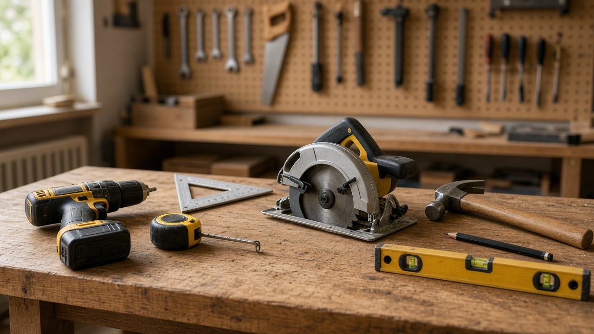
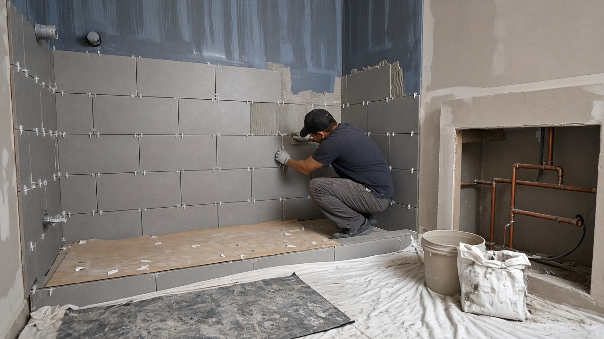
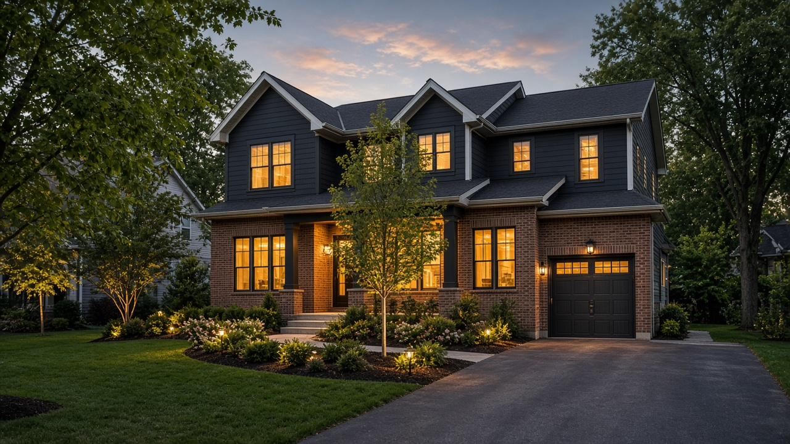
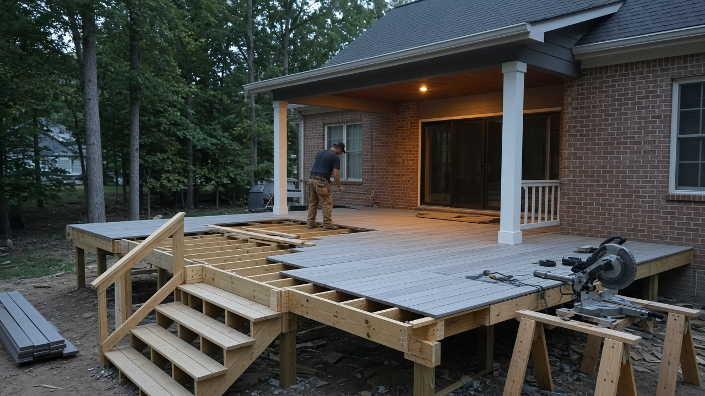
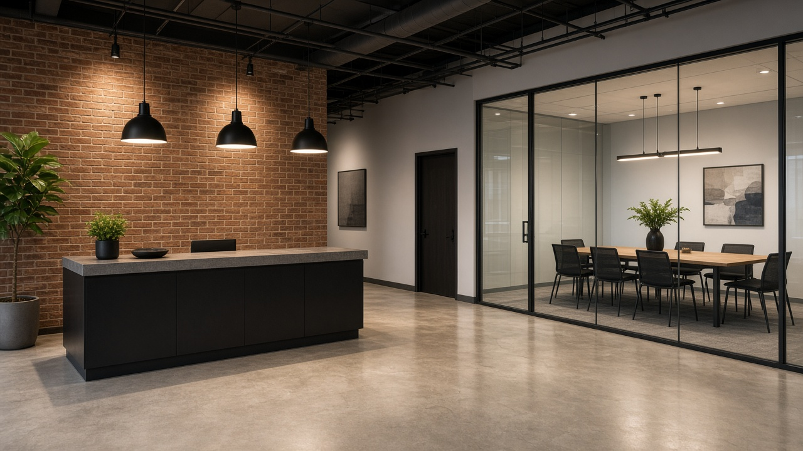
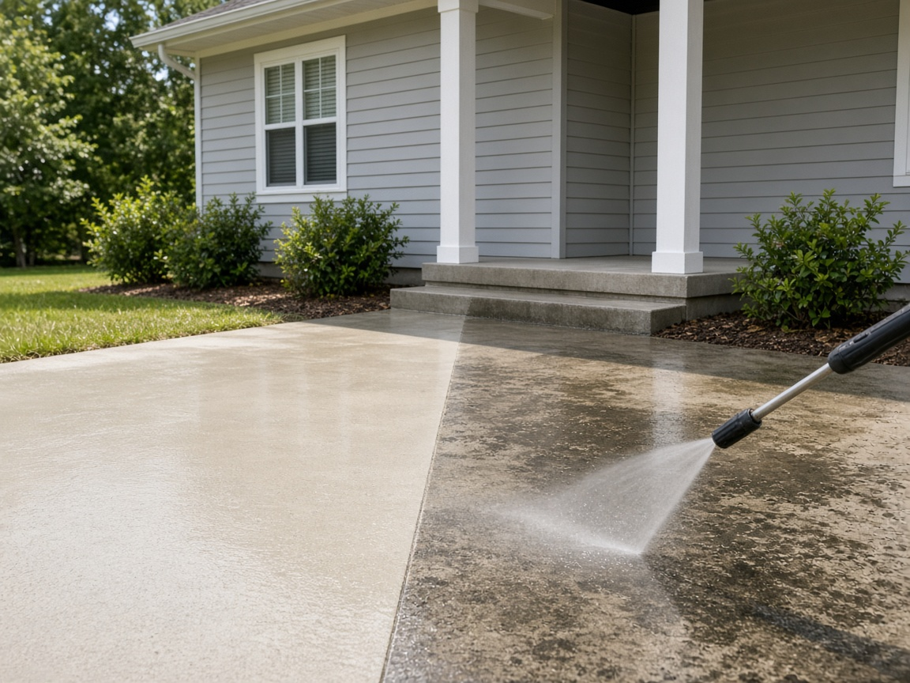

Home remodeling in Cumberland County.
North Carolina Building and Remodeling LLC works with homeowners in Cumberland County and surrounding communities, including the Fayetteville area. Choose a service and start a request.

Service 01
Remodeling
Kitchen remodeling, bathroom remodeling, and other living-space updates for the way you live.
Common projects
- Kitchen remodels
- Bathroom remodels
- Flooring, trim and finish work
- Layout changes and room updates

Service 02
Roofing
Roof repair and roof replacement that keep your home dry and protected.
Common projects
- Leak repairs
- Shingle repair and replacement
- Full roof replacement
- Repairs after storm damage

Service 03
Home repairs and renovations
Home repairs and renovations, from a short punch list to rot, water damage, and other fixes around the house.
Common projects
- Deck and porch repairs
- Drywall and trim repairs
- Rot and water damage
- Punch lists around the house

Service 04
Interior and exterior painting
Interior and exterior painting, with surface prep and repairs done before the first coat. For the outside of the house, we also handle exterior cleaning.
Common projects
- Interior walls, ceilings and trim
- Exterior siding and trim
- Surface prep and patching

Service 05
Exterior cleaning
Soft washing, pressure washing, and cleanup for siding, concrete, and outdoor surfaces. It pairs well with exterior painting.
Common projects
- Siding soft washing
- Concrete walkways and patios
- Brick steps and entryways
- Outdoor surface cleanup
Something else
Don’t see your project?
Send a request anyway and tell us what you need. If it’s not something we do, we’ll let you know.
Contact the officeStart your project
Tell us what you’re working on.
Quote requests go through Jobber, the software we use to manage our projects. Describe the job, upload a few photos, and your request comes straight to us.
You’ll be taken to our request form on Jobber.
- 01
Choose your project type
Remodeling, roofing, repairs, painting, or exterior cleaning.
- 02
Tell us what you need
A few quick questions based on your project.
- 03
Upload photos and submit
Photos help us understand the job before we talk.